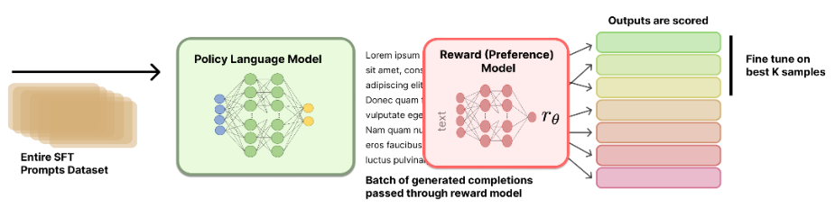
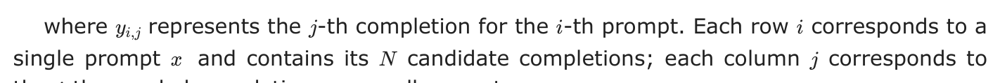
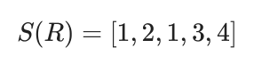
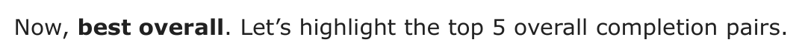
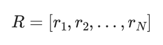
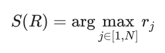

9Rejection Sampling
- What rejection sampling is
- Why rejection sampling may be used instead of RL
Rejection Sampling (RS) is a popular and simple baseline for performing preference fine-tuning. This makes it one of a handful of methods that are used after a first round of instruction tuning in order to further refine the model to human preferences. Rejection sampling operates by curating new candidate completions, filtering them based on a trained reward model, and then instruction fine-tuning the original model only on the top completions (same loss function as when doing a dedicated training stage for learning to follow instructions).
The name originates from computational statistics [1], where one wishes to sample from a complex distribution, but does not have a direct method to do so. To alleviate this, one samples from a simpler distribution to model and uses a heuristic to check if the sample is permissible. With language models, the target distribution is high-quality completions to prompts, the filter is a reward model, and the sampling distribution is the current model.
Many prominent RLHF and preference fine-tuning papers have used rejection sampling as a baseline, but a canonical implementation and documentation does not exist.
WebGPT [2], Anthropic’s Helpful and Harmless agent [3], OpenAI’s popular paper on process reward models [4], Llama 2 Chat models [5], and other seminal works all use this baseline; more recent work has formalized it directly (e.g., RAFT [6] for applying it to alignment in multiple modalities and Statistical Rejection Sampling Optimization (RSO) [7] that gives a principled overview on how rejection sampling relates to other preference learning objectives).
Throughout this chapter, we use x to denote prompts and y to denote completions. This notation is common in the language model literature, where methods operate on full prompt-completion pairs rather than individual tokens.
#9.1 Training Process
Rejection sampling overall follows a few stages.
- Prompt and reward model selection: First, you must select the prompts you want to train on, relative to other stages of training. The simplest method is to re-use every prompt from the first SFT/IFT stage, but this can cause some overfitting. Before doing rejection sampling, you must also have trained a reward model (see Chapter 5 for more information).
- Generate completions from the starting checkpoint: Next, one must generate completions to the selected prompts with the model they want to optimize. This can involve tweaking many settings, such as sampling temperature, top-p, max sequence length, number of completions per prompt, etc.
- Select top completions with a reward model: All completions are ranked by a reward model. This can include deduplication to only have one prompt per completion after this stage, or not, as a lot of the decisions become based on empirical ablation studies.
- SFT on top completions: To finish rejection sampling, one instruction fine-tunes the starting checkpoint on the selected completions.
A visual overview of the rejection sampling process is included below in fig. 9.1.

The actual details on which prompts to use, how to select a reward model, how to sequence rejection sampling, etc. are not well documented in the literature. This chapter provides an overview of the methods and leaves further experimentation to the reader.
#9.1.1 Generating Completions
To generate a set of multiple candidate completions per prompt, let’s define a set of M prompts as a vector:
X = [x1, x2, . . . , xM]
These prompts can come from many sources, but most commonly they come from the instruction training set.
For each prompt xi, we generate N completions. We can represent this as a matrix:

the j-th sampled completion across all prompts.
#9.1.2 Scoring Completions
of rewards. We’ll represent the rewards as a matrix R:
Each reward r is computed by passing the completion yi,j and its corresponding prompt xi through a reward model R:
ri,j = R(yi,j ∣xi)
There are multiple methods to select the top completions to train on.
To formalize the process of selecting the best completions based on our reward matrix, we can define a selection function S that operates on the reward matrix R.
#TOP PER PROMPT
The first potential selection function takes the max reward per prompt.
This function S returns a vector of indices, where each index corresponds to the column with the maximum reward for each row in R. We can then use these indices to select our chosen completions:
Ychosen = [y1,S(R)1, y2,S(R)2, . . . , yM,S(R)M]
#TOP OVERALL PAIRS
Alternatively, we can select the top K prompt-completion pairs from the entire set. First, let’s flatten our reward matrix R into a single vector:
This R
number of completions per prompt.
Now, we can define a selection function SK that selects the indices of the K highest values in Rflat:
SK(Rflat) = argsort(Rflat)[−K :]
where argsort returns the indices that would sort the array in ascending order, and we take the last K indices to get the K highest values.
To get our selected completions, we need to map these flattened indices back to our original completion matrix Y. To recover the corresponding (prompt, completion) pair, you can map a zero-indexed flattened index k to (i, j) via i = ⌊k/N⌋+ 1 and j = (k mod N) + 1.
#SELECTION EXAMPLE
Consider the case where we have the following situation, with 5 prompts and 4 completions. We will show two ways of selecting the completions based on reward.
Using the argmax method, we select the best completion for each prompt:

This means we would select:
- For prompt 1: completion 1 (reward 0.7)
- For prompt 2: completion 2 (reward 0.8)
- For prompt 3: completion 1 (reward 0.9)
- For prompt 4: completion 3 (reward 0.8)
- For prompt 5: completion 4 (reward 0.6)

First, we flatten the reward matrix:
Rflat = [0.7, 0.3, 0.5, 0.2, 0.4, 0.8, 0.6, 0.5, 0.9, 0.3, 0.4, 0.7, 0.2, 0.5, 0.8, 0.6, 0.5, 0.4, 0.3, 0.6]
Now, we select the indices of the 5 highest values:
S5(Rflat) = [8, 5, 14, 0, 11]
Mapping these back to our original matrix:
- Index 8 → prompt 3, completion 1 (reward 0.9)
- Index 5 → prompt 2, completion 2 (reward 0.8)
- Index 14 → prompt 4, completion 3 (reward 0.8)
- Index 0 → prompt 1, completion 1 (reward 0.7)
- Index 11 → prompt 3, completion 4 (reward 0.7)
#IMPLEMENTATION EXAMPLE
Here is a code snippet showing how the selection methods could be implemented.
import numpy as np
x = np.random.randint(10, size=10)
print(f"{x=}")
sorted_indices = np.argsort(x)
x_sorted = x[sorted_indices]
print(f"{x_sorted=}")
#1
i_rev = np.zeros(10, dtype=int)
i_rev[sorted_indices] = np.arange(10)
np.allclose(x, x_sorted[i_rev])
#2
np.allclose(x, x_sorted[np.argsort(sorted_indices)])#9.1.3 Fine-tuning
With the selected completions, you then perform standard instruction fine-tuning on the current rendition of the model. More details can be found in the chapter on instruction tuning.
#9.2 Implementation Details
The core hyperparameters for performing this training are very intuitive:
- Sampling parameters: Rejection sampling is directly dependent on the completions received from the model. Common settings for rejection sampling include temperatures above zero, e.g. between 0.7 and 1.0, with other modifications to parameters such as top-p (nucleus sampling, which samples from the smallest set of tokens whose cumulative probability exceeds p) or top-k sampling (which samples from only the k most likely tokens).
- Completions per prompt: Successful implementations of rejection sampling have included 10 to 30 or more completions for each prompt. Using too few completions will make training biased and/or noisy.
- Instruction tuning details: No clear training details for the instruction tuning during rejection sampling have been released. It is likely that they use slightly different settings than the initial instruction tuning phase of the model.
- Heterogeneous model generations: Some implementations of rejection sampling include generations from multiple models rather than just the current model that is going to be trained. Best practices on how to do this are not established.
- Reward model training: The reward model used will heavily impact the final result. For more resources on reward model training, see the relevant chapter.
When doing batch reward model inference, you can sort the tokenized completions by length so that the batches are of similar lengths. This eliminates the need to run inference on as many padding tokens and will improve throughput in exchange for minor implementation complexity.
#9.3 Related: Best-of-N Sampling
Best-of-N (BoN) is a close relative of rejection sampling, where the same generate-and-score procedure is followed, but you do not fine-tune the model on the selected completions. Instead, BoN is a way of computing a best possible completion to a static prompt (or set of prompts) at inference time, and related techniques are often used in “Pro” tiers of chat models that spend extra compute to get an answer to your query.
Best-of-N sampling is often included as a baseline relative to RLHF training methods. It is important to remember that BoN does not modify the underlying model, but is a sampling technique. For this reason, comparisons for BoN sampling to online training methods, such as PPO, are still valid in some contexts. For example, you can still measure the KL distance when running BoN sampling relative to any other policy.
Here, we will show that when using simple BoN sampling over one prompt, both selection criteria shown above are equivalent.
Let R be a reward vector for our single prompt with N completions:

Where rj represents the reward for the j-th completion.
Using the argmax method, we select the best completion for the prompt:

Using the Top-K method with K = 1 reduces to the same method, which is common practice.
[1]W. R. Gilks and P. Wild, “Adaptive rejection sampling for gibbs sampling,” Journal of the Royal Statistical Society: Series C (Applied Statistics), vol. 41, no. 2, pp. 337– 348, 1992.
[2]R. Nakano et al., “Webgpt: Browser-assisted question-answering with human
feedback,” arXiv preprint arXiv:2112.09332, 2021.
[3]Y. Bai et al., “Training a helpful and harmless assistant with reinforcement learning from human feedback,” arXiv preprint arXiv:2204.05862, 2022.
[4]H. Lightman et al., “Let’s verify step by step,” in International conference on
learning representations (ICLR), 2024.
[5]H. Touvron et al., “Llama 2: Open foundation and fine-tuned chat models,” arXiv
preprint arXiv:2307.09288, 2023.
[6]H. Dong et al., “RAFT: Reward rAnked FineTuning for generative foundation model alignment,” Transactions on Machine Learning Research (TMLR), 2023.
[7]T. Liu et al., “Statistical rejection sampling improves preference optimization,” in
International conference on learning representations (ICLR), 2024.